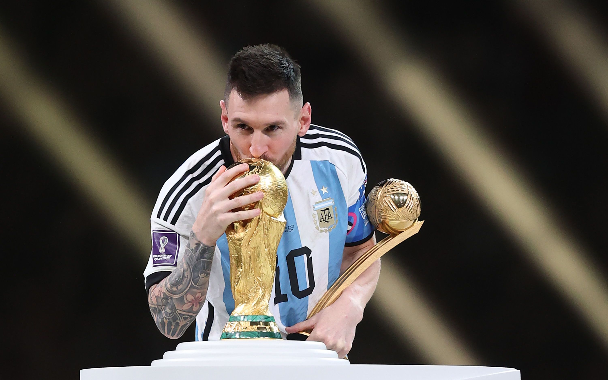
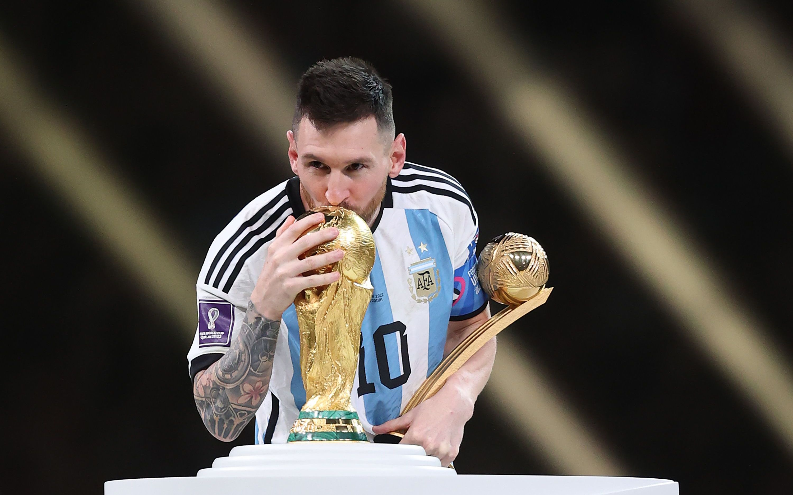
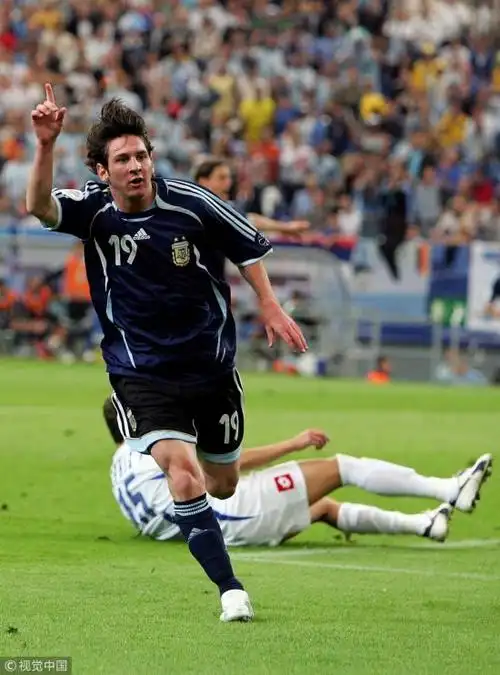
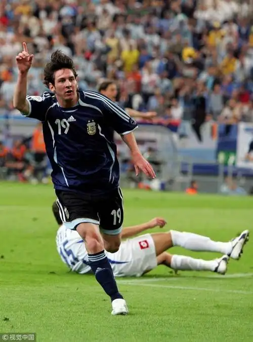

兴趣爱好
足球是我生活中最持久的热爱，而利昂内尔·梅西（Lionel Messi）则是这份热爱里最耀眼的光芒。这位被业界誉为“The GOAT”（历史最佳）的阿根廷传奇，不仅手握8座金球奖、6个欧洲金靴奖的史诗级荣誉，更以极致的球技与坚韧的意志定义了足球的魅力——他的盘带如行云流水，小范围摆脱无人能及，2012年单年打入91球的纪录至今无人撼动，2022年率领阿根廷队夺得世界杯冠军，更是圆了无数球迷的终极期待。从拉玛西亚青训营的少年到横跨巴萨、巴黎、迈阿密国际的传奇，从世青赛冠军到美洲杯、世界杯大满贯，梅西的职业生涯始终诠释着“热爱可抵岁月漫长”。他场上的专注与谦逊，场下的坚守与温情，让我在踢球时学会享受过程、在受挫时懂得永不言弃，也让足球于我而言，早已超越了运动本身。
 


 
